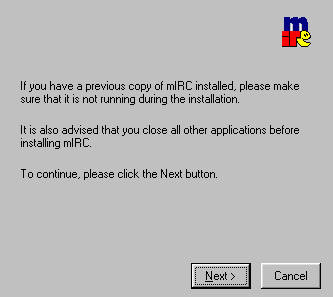
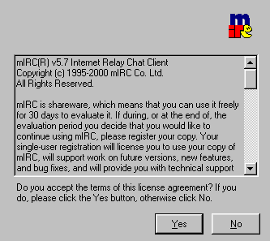
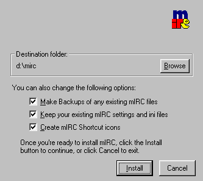
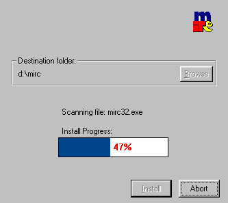
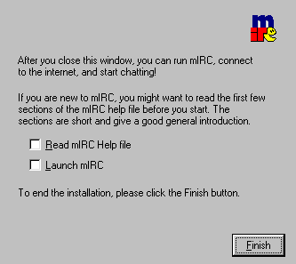

|
MIRC를 인스톨하자
|
|
|  |
인스톨을 시작하면 처음 접하는
화면이다. 그냥 Next를 누루자. |
|  |
사용자 동의서이다. 자신이 있으면
약관을 읽어봐도 좋다 ㅡ.ㅡ 동의하면 Yes버튼을 꾹 누루자 |
|  |
인스톨할 디렉토리와 옵션을
바꾸는 페이지 이다.. 왠만하면 바꾸지말고 Install버튼을 누루자 . |
|  |
인스톨이 진행되는 화면이다
그냥 한번 넣어봤다... |
|  |
인스톨이 성공적으로 완료되면
이 화면이 뜰것이다.. 추카한다.. |